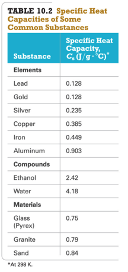
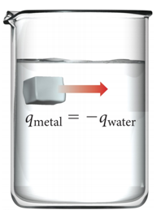
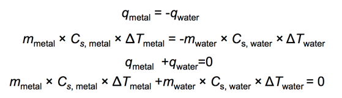
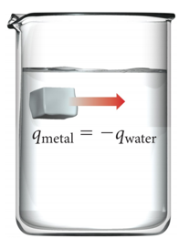
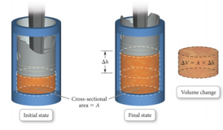

Week 13 - Day 3
Navigate using audio
Quantifying Heat Energy
- Audio 0:03:56.456416
- The heat capacity of an object is proportional to the following:
- Directly proportional to mass
- The specific heat of the material
- The quantity of heat absorbed by an object can be determined if the following are known:
- Mass
- Specific heat capacity
- Temperature change
Specific Heat Capacity
- Audio 0:05:10.723769
- Measure of a substance’s intrinsic ability to absorb heat.
- The specific heat capacity is the amount of heat energy required to raise the temperature of one gram of a substance 1 °C.
- Cs
- Units J/(g · °C)
- The molar heat capacity is the amount of heat energy required to raise the temperature of one mole of a substance 1 °C.
- 
Practice Problem:
Temperature Changes and Heat Capacity
- Audio 0:09:58.630420
- You find a pre-1982 penny in the snow. How much heat is absorbed as it warms from -8.0 °C to body temperature, 37.0 °C? Assume the penny is pure copper and has a mass of 3.10 g
Clicker 1
- Audio 0:12:20.872114
- A sample of copper absorbs 43.6 kJ of heat, resulting in a temperature rise of 75.0°C, determine the mass (in kg) of the copper sample if the specific heat capacity of copper is 0.385 J/g°C
- A) 1.51
- B) 6.62
- C) 1.26
- D) 7.94
- E) 3.64
Heat Transfer and Final Temperature
- Audio 0:17:13.460079
- When two objects at different temperatures are placed in contact, heat flows from the material at the higher temperature to the material at the lower temperature.
- Heat flows until both materials reach the same final temperature.
- The amount of heat energy lost by the hot material equals the amount of heat gained by the cold material.
- If one is defined as our system, the other as surroundings then:
- qsystem=-qsurroundings
- qsys = -qsurr
- 
Thermal Energy Transfer
- Audio 0:19:06.599992
- A block of metal at 55 °C is added to water at 25 °C.
- Thermal energy transfers heat from the metal to the water.
- The exact final temperature depends on the following:
- The mass of the metal
- The mass of water
- Specific heat capacities of the metal and of water
- 
- 
Practice Problem: Thermal Energy Transfer
- Audio 0:19:36.161583
- A 32.5 g cube of aluminum initially at 45.8 oC is submerged into 105.3 g of water at 15.4 oC. What is the final temperature? (Assume there is no heat lost)
Clicker 2
- Audio 0:26:13.227245
- A 43.9-g piece of copper (CCu= 0.385 J/g°C) at 135.0°C is plunged into 254 g of water at 39.0°C. Assuming that no heat is lost to the surroundings, what will the final temperature of the system be?
- A) 100.0°C
- B) 40.5°C
- C) 62.5°C
- D) 87.0°C
- E) 53.1°C
Pressure–Volume Work
- Audio 0:33:15.662283
- PV work is work caused by a volume change against an external pressure.
- When gases expand, ΔV is positive, but the system is doing work on the surroundings, so wgas is negative.
- As long as the external pressure is kept constant, w = –PΔV.
- Workgas = External Pressure × Change in Volumegas
- To convert the units to joules, use 101.3 J = 1 atm · L.
- 
Practice Problem: Pressure–Volume Work
- Audio 0:36:20.018920
-
To inflate a balloon you must do pressure-volume work on the surroundings. If you inflate a balloon from a volume of 0.100 L to 1.85L, against atmospheric pressure (1.00 atm), how much work is done (in Joules)
Clicker 3
- Audio 0:38:59.416030
- Calculate the change in internal energy (delta E) for a system that is giving off 25.0kJ of heat and is changing from 12.00 L to 6.00 L in volume at 1.50 atm pressure (remember that 101.3 J = 1 L*atm) 25.9 kJ
Vocab
| Term | Definition |
|---|---|
| heat capacity | directly proportional to mass |
| specific heat capacity | the amount of heat energy required to raise the temperature of one gram of a substance 1 °C |
| molar heat capacity | the amount of heat energy required to raise the temperature of one mole of a substance 1 °C |
| Pressure volume work | work caused by a volume change against an external pressure (w = –PΔV) |